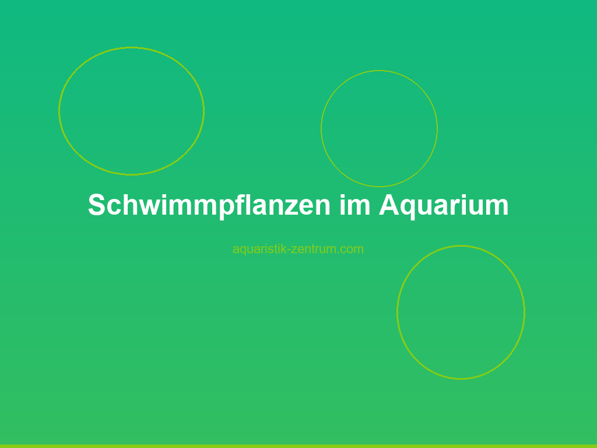

Schwimmpflanzen im Aquarium: Arten, Nutzen, Pflege und Kontrolle ohne Lichtchaos
Schwimmpflanzen sind die heimlichen Helden vieler erfolgreicher Aquarien. Sie treiben an der Oberfläche, schicken ihre Wurzeln ins Wasser und brauchen weder Substrat noch Düngekapseln, um zu wachsen. Sie ziehen Nitrat aus dem Wasser, beschatten das Becken, beruhigen scheue Fische und bieten Jungfischen und Garnelen Schutz. Gleichzeitig können sie – falsch eingesetzt – zum Problem werden: zu viel Schatten, verstopfte Filtereinläufe und nachts sogar Sauerstoffmangel.
In diesem Guide zeigen wir dir, welche Schwimmpflanzenarten sich wirklich lohnen, wie du Licht und Nährstoffe im Gleichgewicht hältst und wie du typische Fehler vermeidest. Egal ob 30-Liter-Nano, 240-Liter-Gesellschaftsbecken oder Zuchtbecken für Garnelen und Betta – mit der richtigen Auswahl werden Schwimmpflanzen zum stabilisierenden Element deines Aquariums.

1. Warum Schwimmpflanzen?
Schwimmpflanzen sind Gewächse, die frei an der Wasseroberfläche treiben oder mit langen Wurzeln im Wasser hängen, ohne im Bodengrund verankert zu sein. Sie nehmen Nährstoffe direkt aus dem Wasser auf und betreiben Photosynthese über ihre Blätter an der Luft. Genau diese Lebensweise macht sie zu extrem effizienten Nitratsenkern – in einem stark gefütterten Becken können sie in wenigen Wochen messbar die Nitratwerte drücken.
Die wichtigsten Vorteile auf einen Blick:
- Nitratabbau: Schwimmpflanzen wachsen oft schneller als alle Bodendecker zusammen und verbrauchen dabei Nitrat und Phosphat.
- Algenprävention: Durch die Beschattung und die Nährstoffkonkurrenz haben Grünalgen und Fadenalgen deutlich schlechtere Karten.
- Sauerstoffproduktion: Tagsüber produzieren sie über ihre Blätter Sauerstoff und verbessern die Oberflächenzirkulation.
- Schutz für Fische und Garnelen: Scheue Arten wie Salmler, Zwergbuntbarsche oder Betta fühlen sich unter einer Schwimmpflanzendecke deutlich wohler. Jungfische finden hier ihr erstes Versteck.
- Natürliche Optik: Eine leichte Bedeckung der Oberfläche wirkt biotopnah und beruhigend – besonders in Südamerika- und Asien-Becken.
Merke: Schwimmpflanzen sind kein „Set-and-forget"-Add-on. Sie wachsen aktiv, konkurrieren mit deinen Bodenpflanzen um Licht und Nährstoffe und brauchen regelmäßige Pflege. Wer sie unkontrolliert wuchern lässt, riskiert genau die Probleme, die sie eigentlich lösen sollen.
Die typischen Nachteile solltest du kennen, bevor du eine Art wählst:
- Lichtklau für Bodenpflanzen: Dichte Schwimmpflanzendecken können 30–70 % des Lichts schlucken – Bodendecker wie Hemianthus, Glossostigma oder Eleocharis leiden darunter.
- Schnelle Vermehrung: Vor allem Lemna und Wasserhyazinthe vermehren sich explosionsartig und überwuchern das Becken in Tagen.
- Verstopfte Filtereinläufe: Feine Wurzeln und schwimmende Triebe können Ansaugschlitze und Oberflächenabschäumer blockieren.
- Nächtlicher Sauerstoffverbrauch: Wie alle Pflanzen atmen Schwimmpflanzen nachts Sauerstoff – bei zu dichter Decke kann der O₂-Gehalt kritisch sinken.
2. Beliebte Arten
Die Auswahl an Schwimmpflanzen ist groß, aber nicht jede Art passt zu jedem Becken. Die folgende Übersicht zeigt die gängigsten Arten, ihre Ansprüche und ihren typischen Einsatzbereich.
| Art | Größe | Lichtbedarf | Temperatur | Pflegeaufwand | Besonderheit |
|---|---|---|---|---|---|
| Froschbiss (Limnobium laevigatum) | 3–5 cm Blatt | Mittel | 18–28 °C | Niedrig | Wurzelt, starker Nitrat-Verwerter |
| Muschelblume (Pistia stratiotes) | 10–25 cm | Hoch | 22–30 °C | Mittel | Viel Schatten, wärmeliebend |
| Salvinia (Salvinia natans) | 1–3 cm | Mittel | 18–28 °C | Niedrig | Klein, schwimmend, nicht wurzelnd |
| Wasserhyazinthe (Eichhornia crassipes) | 15–30 cm | Sehr hoch | 22–30 °C | Hoch | Sehr groß, schnellwüchsig, wärmeliebend |
| Wasserlinse (Lemna minor) | 2–5 mm | Niedrig | 10–30 °C | Hoch (Ausdünnen!) | Vermehrung explosionsartig, ideal für Garnelen |
| Riccia (Riccia fluitans) | Polster | Mittel bis hoch | 18–28 °C | Mittel | Schwimmend oder aufgebunden, Schaumnestbau-Hilfe |
| Hornfarn schwimmend (Ceratophyllum demersum) | Bis 80 cm | Niedrig | 10–28 °C | Niedrig | Sehr robust, Sauerstoffproduzent |
| Froschbiss winterhart (Hydrocharis morsus-ranae) | 3–6 cm | Mittel | 10–25 °C | Niedrig | Für Kaltwasser- und Gartenteichbecken |
Froschbiss – der Allrounder
Limnobium laevigatum ist die mit Abstand beliebteste Schwimmpflanze im Hobby. Sie bildet kleine, runde Blätter an der Oberfläche und lange, weiße Wurzeln, die bis zu 30 cm ins Wasser hängen können. Diese Wurzeln sind ein Magnet für Jungfische und Garnelen – hier siedeln sich Biofilme und Mikroorganismen an, die als zusätzliche Nahrungsquelle dienen. Froschbiss wächst bei 18–28 °C, kommt mit mittlerer Beleuchtung klar und entfernt zuverlässig Nitrat. Ideal für Einsteiger.
Muschelblume – die Schattenspenderin
Pistia stratiotes bildet große, muschelartige Blätter mit wasserabweisender Oberfläche. Sie ist die beste Wahl, wenn du viel Schatten erzeugen willst – perfekt für Becken mit scheuen Fischen, Schmerlen oder Welsen. Sie braucht viel Licht und Wärme (ab 22 °C) und bildet lange Wurzeln, die gelegentlich eingekürzt werden sollten.
Lemna – das unterschätzte Kraftpaket
Wasserlinsen sind winzig, vermehren sich aber rasend schnell. In einem gut gefütterten Becken verdoppelt sich der Bestand alle 2–3 Tage. Lemna ist der effizienteste Nitratfresser pro Blattfläche und perfekt für Garnelenbecken, weil die kleinen Pflänzchen Aufwuchsfläche bieten und das Wasser optimal filtern. Mit einem feinen Sieb abgeschöpft, lässt sie sich gut kontrollieren.
Salvinia und Riccia
Salvinia natans treibt als kleine, ovale Blätter auf der Oberfläche und bildet keine Wurzeln – sie ist daher ideal, wenn du eine geschlossene Decke ohne Wurzelwerk möchtest. Riccia fluitans kannst du entweder frei schwimmen lassen oder auf Stein oder Wurzeln aufbinden – aufgebunden ist sie weltberühmt durch Takashi Amanos Aquascapes und bietet Garnelen perfekten Untergrund.
🛒 Schwimmpflanzen Aquarium — Froschbiss, Salvinia und Muschelblume vergleichen
Schwimmpflanzen bekommst du im Zoofachhandel, bei spezialisierten Aquarienpflanzen-Versendern und auf Amazon. Achte auf frische, grüne Blätter ohne Algenbelag und auf bundweise Abgabe – so hast du genug Ausgangsmaterial für eine schnelle Vermehrung.
👉 Schwimmpflanzen bei Amazon ansehen3. Licht und Schatten
Schwimmpflanzen beeinflussen die Lichtverhältnisse in deinem Aquarium massiv. Eine dichte Decke aus Froschbiss oder Muschelblume kann 30 bis 70 % des einfallenden Lichts schlucken. Das ist Fluch und Segen zugleich.
Auf der positiven Seite steht die Algenprävention: Gerade in neu eingerichteten Becken oder nach Medikamentenbehandlungen ist eine Schwimmpflanzendecke oft die wirksamste Waffe gegen Pinsel- und Grünalgen. Das reduzierte Lichtsignal hemmt das Algenwachstum, während die Schwimmpflanzen weiterwachsen und Nährstoffe verbrauchen.
Die Kehrseite betrifft deine Bodenpflanzen. Beliebte Vordergrundpflanzen wie Hemianthus callitrichoides 'Cuba', Glossostigma elatinoides oder Eleocharis acicularis benötigen mindestens 0,5 Watt pro Liter bei vollem Spektrum, um kompakt zu bleiben. Wird dieser Wert durch Schwimmpflanzen halbiert, ziehen sie in die Höhe oder verschwinden ganz.
Merke: Wenn du Schwimmpflanzen und anspruchsvolle Bodendecker kombinieren willst, erhöhe die Beleuchtungsdauer von 8 auf 10–12 Stunden täglich. Eine zweite, stärkere LED-Leiste kann sinnvoll sein.
Als Faustregel gilt: Lass die Schwimmpflanzen maximal 50–60 % der Oberfläche bedecken. Mehr führt fast immer zu Problemen mit Bodenpflanzen, Fadenalgen und Sauerstoffschwund.
4. Nährstoffverbrauch
Schwimmpflanzen sind Nährstoff-Giganten. Eine Handvoll Froschbiss kann pro Woche so viel Nitrat verbrauchen wie ein 5-fach größerer Bestand an Bodendeckern. Wer sein Aquarium mit Schwimmpflanzen bestückt, muss mit einem intensiveren Nährstoffregime für die verbleibenden Pflanzen rechnen. Das betrifft vor allem:
- Nitrat (NO₃): Wird durch Schwimmpflanzen oft auf 5–10 mg/l gedrückt – für viele Bodendecker zu wenig. Gegenmaßnahme: gezielte Düngung über Makro-Dünger auf 15–20 mg/l.
- Phosphat (PO₄): Wird ebenfalls stark verbraucht. Ein PO₄-Wert von 0,1–0,5 mg/l ist für Pflanzenaquarien ideal.
- Eisen (Fe) und Mikronährstoffe: Auch Mikros werden von den Schwimmpflanzen aufgenommen – regelmäßige Düngung über Eisenvolldünger bleibt Pflicht.
- Kalium (K): In stark beleuchteten Becken kann Kalium zum Mangelfaktor werden.
Andersherum kannst du den Effekt nutzen: In Garnelenbecken mit viel Futtereintrag sind Schwimmpflanzen der beste biologische Nitratfilter und reduzieren die Häufigkeit großer Wasserwechsel.
Praxistipp: Werden Stängelpflanzen plötzlich kleinblättrig, hellgrün oder durchsichtig, ist das oft ein Zeichen für Nährstoffmangel – ausgelöst durch zu viele Schwimmpflanzen. Düngen statt ausdünnen kann hier die bessere Lösung sein.
5. Strömung und Abdeckung
Schwimmpflanzen lieben ruhige Oberflächen. Eine starke Strömung drückt sie in eine Ecke oder verhindert, dass sie sich gleichmäßig verteilen. In Becken mit starker Strömung platziere die Auslässe so, dass die Oberfläche in der Mitte relativ ruhig bleibt.
Die Kombination aus Schwimmpflanzen und Glasscheibenabdeckung ist heikel. Ein vollständig geschlossenes Becken ohne Luftaustausch führt zu steigender CO₂-Konzentration und fallendem Sauerstoffgehalt unter der Abdeckung. Empfehlung:
- Abdeckung mit 1–2 cm Spalt an Rückseite oder Seiten für Gasaustausch.
- Offene Becken sind mit Schwimmpflanzen die bessere Wahl.
- Labyrinther wie Betta und Trichogaster brauchen Zugang zur warmen, feuchten Luftschicht direkt über dem Wasser. Schwimmpflanzen stabilisieren diese Luftschicht auf natürliche Weise.
Bei Garnelenbecken empfiehlt sich eine Abdeckung mit Lüftungsgitter, damit die Tiere nicht springen, der Gasaustausch aber funktioniert.
6. Pflege und Ausdünnen
Schwimmpflanzen sind pflegeleicht, aber nicht pflegefrei. Je nach Art und Wachstumsgeschwindigkeit musst du alle 2 bis 4 Wochen ausdünnen, damit die Decke nicht zu dicht wird. Größere Arten entfernst du mit einem feinen Aquarienkescher – einmal überschwenken, die Pflanze fängt sich in den Maschen.
Feine Arten wie Lemna und Riccia verlangen mehr Fingerspitzengefühl. Hier bewährt sich ein feines Küchensieb. Überschüssige Lemna kannst du an Freunde mit Garnelenbecken weitergeben – sie ist ein begehrtes Futter- und Filtertier.
Die wichtigsten Pflegeschritte im Überblick:
- Wöchentlich: Sichtkontrolle der Deckendichte, vergilbte Blätter entfernen.
- Alle 2–4 Wochen: Größere Arten ausdünnen, Wurzeln bei Bedarf einkürzen.
- Alle 4–6 Wochen: Filtereinläße auf Verstopfung prüfen, ggf. mit Vorfilter schützen.
- Bei Düngung: Eisenvolldünger ins Wasser, nicht direkt auf die Blätter.
Merke: Schwimmpflanzen sind ein Spiegel deines Beckens. Gesundes, kräftiges Grün deutet auf gute Nährstoffversorgung hin. Blasse oder gelbe Blätter zeigen meist einen Mangel an Eisen oder Mikronährstoffen an.
7. Probleme vermeiden
Schwimmpflanzen sind kein Selbstläufer. Die häufigsten Probleme lassen sich mit etwas Aufmerksamkeit jedoch gut in den Griff bekommen.
Zu viele Schwimmpflanzen → nächtlicher Sauerstoffmangel
Schwimmpflanzen atmen nachts wie Fische Sauerstoff und produzieren kein O₂. Eine zu dichte Decke kann in den frühen Morgenstunden den Sauerstoffgehalt kritisch senken – Fische hängen dann an der Oberfläche und schnappen nach Luft. Die Lösung: Decke auf maximal 50 % der Oberfläche begrenzen, nachts eine Oberflächenbewegung durch Filterauslass oder Sprudler sicherstellen, im Sommer ggf. mit kühlerer Raumtemperatur arbeiten.
Verstopfte Filtereinläufe
Lange Wurzeln von Froschbiss oder Muschelblume wickeln sich gern um Filterrohre und Ansaugschlitze. Ein feinmaschiger Vorfilter oder Schwamm auf dem Einlass schafft Abhilfe. Innenfilter mit Ansaugkorb sollten regelmäßig kontrolliert werden.
Lichtmangel für Bodenpflanzen
Wenn deine Bodendecker plötzlich lang und kraftlos werden, ist die Schwimmpflanzendecke meist die Ursache. Beleuchtungsdauer erhöhen, Deckendichte reduzieren oder eine stärkere LED-Leiste installieren. Alternativ: weniger lichtbedürftige Pflanzen wie Anubias, Microsorum oder Cryptocorynen verwenden.
Fadenalgen unter der Decke
In dichten Schwimmpflanzendecken kann sich abgestorbenes Pflanzenmaterial ansammeln – ein idealer Nährboden für Fadenalgen. Regelmäßig ausdünnen, abgestorbene Triebe absammeln, bei Bedarf eine kleine Strömungspumpe unter der Decke installieren, um das Wasser in Bewegung zu halten.
Vergilbte Blätter
Wenn die Blattoberseiten gelblich werden, fehlt meist Eisen oder Magnesium. Ein Eisenvolldünger nach Anleitung des Herstellers bringt schnell Abhilfe. Bei sehr weichem Wasser kann auch ein Kalkmangel die Ursache sein – dann hilft eine gezielte Aufhärtung über Mineralien.
8. Einsatz bei Zucht und Garnelen
Schwimmpflanzen sind in Zuchtbecken fast unverzichtbar. Sie bieten Schutz, verbessern die Wasserqualität und schaffen Strukturen, die natürliche Lebensräume nachahmen.
Labyrinther und Schaumnestbauer
Betta, Trichogaster, Colisa und andere Labyrinther bauen ihre Schaumnester bevorzugt unter Schwimmpflanzen, weil die Wurzeln und Blätter das Nest stabilisieren und vor Luftzug schützen. Eine dünne Riccia-Decke oder einzelne Froschbiss-Pflanzen sind ideal. Wichtig: Das Becken muss oben geschlossen oder abgedeckt sein, damit die Luftschicht über dem Wasser warm und feucht bleibt – Labyrinther atmen diese Luft direkt.
Garnelen
Garnelen lieben Schwimmpflanzen. Die langen Wurzeln von Froschbiss, Salvinia und Muschelblume sind ein Paradies: Hier siedeln sich Mikroorganismen, Biofilme und Kleinstpartikel an, die als Zusatznahrung dienen. Besonders JunggarneIn halten sich bevorzugt in der Wurzelzone auf, weil sie hier vor Fressfeinden geschützt sind und ständig Futter finden. Lemna ist in dicht besetzten Garnelenbecken der absolute Renner – sie filtert das Wasser und liefert gleichzeitig Aufwuchsfläche.
Jungfische
Gerade in Aufzuchtbecken sind feine Schwimmpflanzen wie Riccia, Hornkraut oder Salvinia wichtig. Sie bieten Versteckmöglichkeiten, reduzieren Stress und verteilen das Futter in der oberen Wasserschicht, wo Jungfische sich bevorzugt aufhalten. Eine dünne Wurzeldecke aus Froschbiss ist eine Alternative, wenn die Jungfische etwas größer sind.
Für die Auswahl nach Beckengröße gilt diese Faustregel:
| Beckengröße | Empfohlene Schwimmpflanzen-Menge | Geeignete Arten |
|---|---|---|
| Bis 30 Liter (Nano) | 5–10 Pflanzen oder kleine Polster | Salvinia, Riccia, Lemna |
| 30–80 Liter | 8–15 Pflanzen | Froschbiss, Salvinia, Riccia |
| 80–200 Liter | 1–2 Handvoll | Froschbiss, Muschelblume, Hornfarn |
| Ab 200 Liter | Mehrere Arten gemischt, 30–50 % Bedeckung | Alle genannten Arten |
Praxistipp: In Garnelen- und Zuchtbecken solltest du auf stark wärmeliebende Arten wie Wasserhyazinthe und Muschelblume verzichten, wenn du die Becken ohne Heizung bei 22–24 °C betreibst. Froschbiss, Salvinia, Lemna und Riccia wachsen in diesem Bereich problemlos.
9. FAQ
Muss ich Schwimmpflanzen düngen?
Schwimmpflanzen nehmen ihre Nährstoffe direkt aus dem Wasser auf. Eine zusätzliche Düngung ist in der Regel nicht nötig, solange du regelmäßig fütterst und Wasser wechselst. In sehr nährstoffarmen Becken mit viel Bodendecker-Bepflanzung kann ein Eisenvolldünger sinnvoll sein, weil die Schwimmpflanzen sonst den Bodenpflanzen die Mikros wegkonkurrieren.
Welche Schwimmpflanzen eignen sich für Nano-Aquarien?
Für Becken bis 30 Liter sind Salvinia, Riccia und Lemna ideal. Sie bleiben klein, brauchen wenig Platz und vermehren sich langsam genug, um sie gut zu kontrollieren. Froschbiss ist im Nano oft zu groß, Muschelblume und Wasserhyazinthe sind ungeeignet.
Welche Schwimmpflanzen eignen sich für Garnelenbecken?
Alle genannten Arten funktionieren mit Garnelen. Besonders beliebt sind Froschbiss (lange Wurzeln), Lemna (schnelle Vermehrung, einfache Entnahme) und Riccia (feine Struktur). Auf stark wärmeliebende Arten verzichten, wenn du die Becken bei 22–24 °C betreibst.
Kann ich Schwimmpflanzen im Freien überwintern?
Wasserhyazinthe und Pistia sind nicht winterhart und sterben bei Temperaturen unter 15 °C ab. Froschbiss winterhart (Hydrocharis morsus-ranae), Salvinia und Lemna vertragen kühlere Temperaturen und können in Teichen überwintern, solange das Becken nicht komplett zufriert. Im Aquarium reicht eine kühle, helle Stelle (z. B. Kellerfenster) bei 10–15 °C.
Wann sollte ich Schwimmpflanzen entfernen?
Schwimmpflanzen solltest du reduzieren oder ganz entfernen, wenn:
- Deine Bodenpflanzen trotz erhöhter Beleuchtung nicht mehr wachsen.
- Fische nachts an der Oberfläche nach Luft schnappen.
- Filtereinläufe regelmäßig verstopfen.
- Sich Fadenalgen unter der Decke ausbreiten.
- Die Oberfläche zu mehr als 60 % bedeckt ist.
Beginne mit einer Reduktion auf 30–40 % Bedeckung und beobachte, ob sich die Probleme innerhalb von 2–3 Wochen bessern. Eine komplette Entfernung ist selten nötig.
Können Schwimmpflanzen mit CO₂ kombiniert werden?
Ja, das funktioniert gut. CO₂ löst sich im Wasser, die Schwimmpflanzen nehmen einen Teil davon über ihre Wurzeln und Blätter auf. Allerdings reduziert eine dichte Schwimmpflanzendecke die CO₂-Ausgasung an die Luft – du brauchst eventuell eine höhere CO₂-Zugabe, um den Ziel-pH-Wert zu erreichen. Ein Tropfentest oder Dauertest hilft bei der Feineinstellung.
Wie schnell vermehren sich Schwimmpflanzen?
Das hängt stark von Art und Bedingungen ab. Lemna verdoppelt sich unter optimalen Bedingungen alle 2–3 Tage. Froschbiss bildet Ableger an Ausläufern und kann in 4–6 Wochen das Becken füllen. Muschelblume und Wasserhyazinthe vermehren sich ebenfalls über Tochterpflanzen, brauchen aber mehr Wärme. Riccia wächst als Polster und teilt sich langsamer.
Abschließend: Schwimmpflanzen sind mehr als eine Dekoration. Sie sind biologische Nitratfilter, Algenbremsen, Schutz für Jungtiere und Garnelen, Sauerstofflieferanten und ein Stück naturnahe Optik. Mit der richtigen Auswahl, einer Deckendichte von 30–50 % und regelmäßigem Ausdünnen holst du dir die Vorteile, ohne in die typischen Probleme zu rutschen. Fang am besten mit zwei, drei pflegeleichten Arten wie Froschbiss und Salvinia an – und beobachte, wie sich dein Becken entwickelt.
Dieser Guide wurde zuletzt aktualisiert am 6. Juni 2026. Wenn du tiefer in die Thematik einsteigen willst, lohnt sich ein Blick in unsere Artikel zu Aquarienpflanzen für Anfänger, Düngung im Aquarium und CO₂ für Einsteiger.